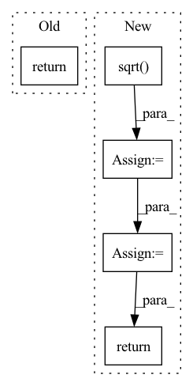

Pattern ID :587
Before Change
x = self.final_conv(self.blocks(x))
x = self.final_linear(x.view(x.shape[0], -1))
return x.squeeze()
After Change
stddev = out.view(
group, -1, self.stddev_feat, channel // self.stddev_feat, height, width
)
stddev = torch.sqrt( stddev.var(0, unbiased=False) + 1e-8)
stddev = stddev.mean([2, 3, 4], keepdims=True).squeeze(2)
stddev = stddev.repeat(group, 1, height, width)
out = torch.cat([out, stddev], 1)
out = self.final_conv(out)
out = out.view(out.shape[0], -1)
out = self.final_linear(out)
return out.squeeze()
In pattern: SUPERPATTERN
Frequency: 4
Non-data size: 5
Instances Fragment ID: 2247202
Project Name: thuangb/enhancing-transformers
Commit Name: a057e7165ef213eab7cadd3af73fb75506ad0674
Time: 2022-06-07
Author: 87744278+thuangb@users.noreply.github.com
File Name: enhancing/losses/layers.py
M Class Name: StyleDiscriminator
N Class Name: StyleDiscriminator
M Method Name: forward(2)
N Method Name: forward(2)
M Parent Class: nn.Module
N Parent Class: nn.Module
M File Name: enhancing/losses/layers.py
N File Name: enhancing/losses/layers.py
M Start Line: 323
M End Line: 326
N Start Line: 326
N End Line: 342
Before Change
w = torch.reshape(w, (B, H, W, H, W))
h = torch.einsum("bhwij,bcij->bchw", w, v)
h = self.NIN_3(h)
return x + h
class Upsample(nn.Module):After Change
attn = torch.einsum(
"bnchw, bncyx -> bnhwyx", query, key
).contiguous() / math.sqrt( channel)
attn = attn.view(batch, n_head, height, width, -1)
attn = torch.softmax(attn, -1)
attn = attn.view(batch, n_head, height, width, height, width)
out = torch.einsum("bnhwyx, bncyx -> bnchw", attn, value).contiguous()
out = self.out(out.view(batch, channel, height, width))
return out + input
class ResnetBlocWithAttn(nn.Module): Fragment ID: 2247175
Project Name: janspiry/image-super-resolution-via-iterative-refinement
Commit Name: 1a5a8bc409a8b8e072eb2bf25330d4662fd279c4
Time: 2021-08-09
Author: lw_jiang@foxmail.com
File Name: model/ddpm_modules/unet.py
M Class Name: AttnBlock
N Class Name: SelfAttention
M Method Name: forward(2)
N Method Name: forward(2)
M Parent Class: nn.Module
N Parent Class: nn.Module
M File Name: model/ddpm_modules/unet.py
N File Name: model/ddpm_modules/unet.py
M Start Line: 125
M End Line: 136
N Start Line: 111
N End Line: 128
Before Change
x_std = x.std(dim=2, keepdim=True).detach()
// make sure x_std is not zero
x_std += self.div_guard
return (x - x_mean) / x_std
class DitherAudio(nn.Module):After Change
num_elements = mask.sum(dim=2, keepdim=True).detach()
x_mean = x.sum(dim=2, keepdim=True).detach() / num_elements
numerator = (x - x_mean).pow(2).sum(dim=2, keepdim=True).detach()
x_std = (numerator / num_elements).sqrt()
// make sure x_std is not zero
x_std += self.div_guard
result = (x - x_mean) / x_std
return torch.masked_fill(result, ~mask, 0.0)
class DitherAudio(nn.Module): Fragment ID: 2247178
Project Name: scart97/thunder-speech
Commit Name: 3d09ac6c7b268acc613d657986845cce31dacd26
Time: 2021-06-17
Author: scart.lucas@gmail.com
File Name: src/thunder/quartznet/transform.py
M Class Name: FeatureBatchNormalizer
N Class Name: FeatureBatchNormalizer
M Method Name: forward(2)
N Method Name: forward(2)
M Parent Class: nn.Module
N Parent Class: nn.Module
M File Name: src/thunder/quartznet/transform.py
N File Name: src/thunder/quartznet/transform.py
M Start Line: 74
M End Line: 78
N Start Line: 74
N End Line: 82